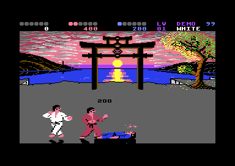
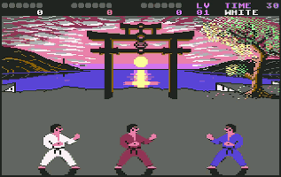

<meta charset="utf-8">
<meta name="viewport" content="width=device-width, initial-scale=1">
<title>IK+</title>
<link rel="preconnect" href="https://fonts.googleapis.com">
<link rel="stylesheet" href="https://fonts.googleapis.com/css2?family=Lato:wght@400;700;900&family=IBM+Plex+Mono:wght@400;500&display=swap">
<link rel="stylesheet" href="reference/ik-plus-page.css">
<!-- tabs -->
<header class="hero">
  <p class="eyebrow">1987 · System 3</p>
  <h1>IK+</h1>
  <p class="sub">IK+ draws the wrong number of points over a felled fighter for two of its attacks. Its pause stands him up again, and three keys no guide names change how the sea ripples.</p>
</header>
<main class="wrap">

<section id="points">
  <p class="fig">01 · Points</p>
  <h2 class="t">Bug: two attacks paint half the points they score</h2>
  <p class="lede">When a fighter goes down, the points of the hit appear in the air above him. For two of the ten attacks the number shown is half the number added to the score.</p>
  <div class="plate"><div class="ik-scroll"><table class="ik-tbl" id="ik-points"></table></div>
    <p class="cap">The points each attack scores (<code>$2D33</code>, <code>$2D3D</code>) beside the number painted for it, drawn from the first digit each attack picks (<code>$2D47</code>, <code>$2D51</code>) and the digit bytes (<code>$3C11</code>). Highlighted rows paint a number that differs from the score.</p></div>
  <p>The painted number comes from a table of its own. While a felled fighter lies on the floor, <code>knock_marks</code> (<code>$3BA3</code>) paints digits into the fallen pose's graphics: “1000”, or one digit followed by “00”. The digit comes from a table that runs alongside the points table, and for attacks 3 and 6 it holds the digit for half the points. The punch on up and forward scores 800 and paints 400; the low kick from a crouch scores 400 and paints 200. Checked in the emulator, the score went up by 800 for every punch that painted 400, and by 400 and 200 for low kicks that painted 200 and 100.</p>
  <div class="plate" style="margin-top:20px">
    <p class="cap">In the emulator, half a second after a low kick from a crouch felled the blue fighter: 200 hangs over him, and the red fighter's score has gone from 0 to 400.</p></div>
</section>

<section id="pause">
  <p class="fig">02 · The pause</p>
  <h2 class="t">Secret: RUN/STOP twice stands a felled fighter up</h2>
  <p>The pause doubles as a cheat. Press RUN/STOP twice while a fighter is knocked down, and the fighter is standing again: the pause (<code>$10BB</code>) clears every fighter's move and never puts it back.</p>
</section>

<section id="trousers">
  <p class="fig">03 · The trousers</p>
  <h2 class="t">Secret: S and E together drop the trousers</h2>
  <p>On the first two levels, holding S and E together drops the trousers of any fighter with no other move to make: <code>start_move</code> (<code>$1C40</code>) gives that fighter move <code>$20</code>.</p>
  <div class="plate"><div class="ik-pics">
    
  </div><p class="cap">The trousers down, from the C64-Wiki.</p></div>
  <p>The trousers also fall without the keys: a fighter left idle for 128 steps has a 1 in 32 chance each step of dropping them.</p>
</section>

<section id="ripple">
  <p class="fig">04 · The ripple</p>
  <h2 class="t">Secret: R, T and X together change how the sea ripples</h2>
  <p><kbd>R</kbd> <kbd>T</kbd> <kbd>X</kbd> changes how the reflection moves (<code>$1855</code>). The C64-Wiki gives D, O and M, and the untouched high-score table spells out a hint that names the asterisk and ends “and others”; none of them names this combination.</p>
  <p>Press it beside the arena it repaints, on <a href="index.html#keys">Overview</a>.</p>
</section>

<section id="hints">
  <p class="fig">05 · The judge's hints</p>
  <h2 class="t">Bug: one of the judge's hints can never appear</h2>
  <p>In the attract mode's demo fights nobody is human, and the judge shows one of eight hints instead, picked at random (<code>$1286</code>). The pick is a number from 1 to 16 in a table that starts at 0 (<code>$11C8</code>), so the table's first entry, message 10, never appears: “IS BEST / IS SECOND / IS WORST”. Neither do messages 23, 24 and 28, which read “SPARE BUBBLE”.</p>
  <p>Every message the judge has is in his speech bubble on <a href="index.html#the-judge">Overview</a>.</p>
</section>

</main>

<footer style="margin:16px 0 0;padding:22px var(--gx) 0;border-top:1px solid #e0ded8;font-family:'IBM Plex Mono',ui-monospace,Menlo,monospace;font-size:12px;color:#80838a"><a href="https://github.com/gamesexplained/gamesexplained" aria-label="GitHub" style="display:inline-flex;align-items:center;justify-content:center;width:26px;height:26px;margin-left:8px;border:1px solid #e0ded8;border-radius:7px;background:#ffffff;color:#80838a;vertical-align:middle"><svg width="15" height="15" viewBox="0 0 24 24" fill="currentColor" aria-hidden="true"><path d="M12 .297c-6.63 0-12 5.373-12 12 0 5.303 3.438 9.8 8.205 11.385.6.113.82-.258.82-.577 0-.285-.01-1.04-.015-2.04-3.338.724-4.042-1.61-4.042-1.61C4.422 18.07 3.633 17.7 3.633 17.7c-1.087-.744.084-.729.084-.729 1.205.084 1.838 1.236 1.838 1.236 1.07 1.835 2.809 1.305 3.495.998.108-.776.417-1.305.76-1.605-2.665-.3-5.466-1.332-5.466-5.93 0-1.31.465-2.38 1.235-3.22-.135-.303-.54-1.523.105-3.176 0 0 1.005-.322 3.3 1.23.96-.267 1.98-.399 3-.405 1.02.006 2.04.138 3 .405 2.28-1.552 3.285-1.23 3.285-1.23.645 1.653.24 2.873.12 3.176.765.84 1.23 1.91 1.23 3.22 0 4.61-2.805 5.625-5.475 5.92.42.36.81 1.096.81 2.22 0 1.606-.015 2.896-.015 3.286 0 .315.21.69.825.57C20.565 22.092 24 17.592 24 12.297c0-6.627-5.373-12-12-12"/></svg></a><a href="https://discord.gg/3V9GWyRDWV" aria-label="Discord" style="display:inline-flex;align-items:center;justify-content:center;width:26px;height:26px;margin-left:8px;border:1px solid #e0ded8;border-radius:7px;background:#ffffff;color:#80838a;vertical-align:middle"><svg width="15" height="15" viewBox="0 0 24 24" fill="currentColor" aria-hidden="true"><path d="M20.317 4.3698a19.7913 19.7913 0 00-4.8851-1.5152.0741.0741 0 00-.0785.0371c-.211.3753-.4447.8648-.6083 1.2495-1.8447-.2762-3.68-.2762-5.4868 0-.1636-.3933-.4058-.8742-.6177-1.2495a.077.077 0 00-.0785-.037 19.7363 19.7363 0 00-4.8852 1.515.0699.0699 0 00-.0321.0277C.5334 9.0458-.319 13.5799.0992 18.0578a.0824.0824 0 00.0312.0561c2.0528 1.5076 4.0413 2.4228 5.9929 3.0294a.0777.0777 0 00.0842-.0276c.4616-.6304.8731-1.2952 1.226-1.9942a.076.076 0 00-.0416-.1057c-.6528-.2476-1.2743-.5495-1.8722-.8923a.077.077 0 01-.0076-.1277c.1258-.0943.2517-.1923.3718-.2914a.0743.0743 0 01.0776-.0105c3.9278 1.7933 8.18 1.7933 12.0614 0a.0739.0739 0 01.0785.0095c.1202.099.246.1981.3728.2924a.077.077 0 01-.0066.1276 12.2986 12.2986 0 01-1.873.8914.0766.0766 0 00-.0407.1067c.3604.698.7719 1.3628 1.225 1.9932a.076.076 0 00.0842.0286c1.961-.6067 3.9495-1.5219 6.0023-3.0294a.077.077 0 00.0313-.0552c.5004-5.177-.8382-9.6739-3.5485-13.6604a.061.061 0 00-.0312-.0286zM8.02 15.3312c-1.1825 0-2.1569-1.0857-2.1569-2.419 0-1.3332.9555-2.4189 2.157-2.4189 1.2108 0 2.1757 1.0952 2.1568 2.419 0 1.3332-.9555 2.4189-2.1569 2.4189zm7.9748 0c-1.1825 0-2.1569-1.0857-2.1569-2.419 0-1.3332.9554-2.4189 2.1569-2.4189 1.2108 0 2.1757 1.0952 2.1568 2.419 0 1.3332-.946 2.4189-2.1568 2.4189Z"/></svg></a><br>© Games Explained contributors. Write-ups, facts and symbol maps are available under <a href="https://creativecommons.org/licenses/by-sa/4.0/" style="color:#1f5fa8;text-decoration:none">CC BY-SA 4.0</a>; code under <a href="https://opensource.org/licenses/MIT" style="color:#1f5fa8;text-decoration:none">MIT</a></footer>
<script>
/* Bytes from the game, by address: the tables the points widget reads, as the game loads them, the
   same bytes as the Fighters tab's. */
const IK = {"7099":"0000000000040203000608070005010000000000000c0a0b000e100f000d0900","8001":"0002080c12161a1e242930343a40454d585f63676c7072737475787d829091939baaafb0b8c2caced2d8","8043":"00000516171605000f140f000102033b0c000d150d0021202100111211000c3b030201003a0f140f0005164545170500191b1a000d070e070d000d0610060d003a212021003c3d3e1010060d001d1e1f08090a0b041c0500414243444241002c2d2e2f28292a2b2424252627131313133a3a0000003a3a000102033b0c0c3b0302013030303030313131313130303030010c0028292a2b2b2b2b2b00323333334040404040404040400016171605000036372222222222003938363722222222220035352222222222002c2d2e2f28292a2b16454517050000","11530":"0e101214151b20434544","11571":"02080408041004100810","11581":"01040204020502100410","11591":"01040202020501050405","11601":"00020101010300050205","15377":"0c3c0c0c0cfc0cfcc0fcccccfc0c0cfcc0fc0cfcfcccfcccfcfcccccccfc"};
</script>
<script>
(function () {
  'use strict';
  const B = (a, n) => { for (const k in IK) { const s = +k, h = IK[k]; if (a >= s && a + n <= s + h.length / 2) { const r = []; for (let i = 0; i < n; i++) r.push(parseInt(h.substr((a - s + i) * 2, 2), 16)); return r; } } throw new Error('no bytes at ' + a); };
  const hx = (v, w = 2) => '$' + v.toString(16).toUpperCase().padStart(w, '0');
  const bcd = (v) => (v >> 4) * 10 + (v & 15);
  const pts = (v) => (bcd(v) * 100).toLocaleString('en-GB');
  const $ = (id) => document.getElementById(id);
  const PAL = (window.C64 && window.C64.PAL) || ['#000000', '#ffffff', '#813338', '#75cec8', '#8e3c97', '#56ac4d', '#2e2c9b', '#edf171', '#8e5029', '#553800', '#c46c71', '#4a4a4a', '#7b7b7b', '#a9ff9f', '#706deb', '#b2b2b2'];

  // ---------------------------------------------------------------- the tables
  const JOY = B(0x1BBB, 32), MOVE_AT = B(0x1F41, 42), POSE = B(0x1F6B, 217);
  const HIT_POSES = B(0x2D0A, 10), FULL = B(0x2D33, 10), HALF = B(0x2D3D, 10);
  const KNOCK_FULL = B(0x2D47, 10), KNOCK_HALF = B(0x2D51, 10), DIGITS = B(0x3C11, 30);
  const DIRS = [['↖', 0x0A, 'up and back'], ['↑', 0x0E, 'up'], ['↗', 0x06, 'up and forward'],
    ['←', 0x0B, 'back'], ['○', 0x0F, 'centred'], ['→', 0x07, 'forward'],
    ['↙', 0x09, 'down and back'], ['↓', 0x0D, 'down'], ['↘', 0x05, 'down and forward']];
  // a frame's pose of $4C or more stands for pose 0 ($1F6B)
  const poses = (m) => POSE.slice(MOVE_AT[m], m + 1 < MOVE_AT.length ? MOVE_AT[m + 1] : 217).map((p) => p >= 0x4C ? 0 : p);
  const attacksOf = (m) => poses(m).map((p) => HIT_POSES.indexOf(p)).filter((a, i, l) => a >= 0 && l.indexOf(a) === i);
  const stickName = (m) => {
    const i = JOY.indexOf(m); if (i < 0) return null;
    const d = DIRS.find((x) => x[1] === (i & 15));
    return d ? (i >= 16 ? 'fire and ' : '') + d[2] : null;
  };
  const poseLink = (p) => `<a href="fighters.html#pose-${p.toString(16).toUpperCase().padStart(2, '0')}" class="ik-mono">${hx(p)}</a>`;
  // the number knock_marks ($3BA3) paints for a mark value: 5 or more is 1000, else digit then 00
  const SHAPE_DIGIT = [1, 2, 4, 5, 8, 0];
  const painted = (k) => k >= 5 ? '1000' : SHAPE_DIGIT[k] + '00';
  // digits drawn from mark_bytes ($3C11): five bytes, four multicolour pixels a byte
  function digits(k, scale = 3) {
    const shapes = k >= 5 ? [0, 5, 5, 5] : [k, 5, 5];
    const c = document.createElement('canvas');
    c.width = (shapes.length * 9 + 2) * scale; c.height = 9 * scale;
    c.className = 'ik-digits';
    c.setAttribute('role', 'img'); c.setAttribute('aria-label', painted(k));
    const g = c.getContext('2d');
    g.fillStyle = '#ffffff';
    shapes.forEach((s, i) => {
      for (let r = 0; r < 5; r++) {
        const b = DIGITS[s * 5 + r];
        for (let px = 0; px < 4; px++) if ((b >> (6 - 2 * px)) & 3) g.fillRect((2 + i * 9 + px * 2) * scale, (2 + r) * scale, 2 * scale, scale);
      }
    });
    return c;
  }


  // ---------------------------------------------------------------- points scored and painted
  const moveName = (m) => (m > 8 ? 'fire and ' : '') + DIRS.find((d) => JOY[(m > 8 ? 16 : 0) + d[1]] === m)[2];
  const tbl = $('ik-points');
  tbl.innerHTML = '<tr><th>Attack</th><th>Pose</th><th>Joystick (facing right)</th><th>Full point</th><th>Painted</th><th>Half point</th><th>Painted</th></tr>';
  for (let a = 0; a < 10; a++) {
    const moves = []; for (let m = 1; m <= 16; m++) if (attacksOf(m).includes(a)) moves.push(moveName(m));
    const tr = document.createElement('tr');
    const odd = painted(KNOCK_FULL[a]) !== String(bcd(FULL[a]) * 100) || painted(KNOCK_HALF[a]) !== String(bcd(HALF[a]) * 100);
    if (odd) tr.className = 'ik-odd';
    tr.innerHTML = `<td class="n">${a}</td><td>${poseLink(HIT_POSES[a])}</td><td>${moves.join('; ')}</td><td class="n">${pts(FULL[a])}</td><td></td><td class="n">${pts(HALF[a])}</td><td></td>`;
    tr.children[4].appendChild(digits(KNOCK_FULL[a], 2));
    tr.children[6].appendChild(digits(KNOCK_HALF[a], 2));
    tbl.appendChild(tr);
  }
})();
</script>
